2 Discussion of “Input & Deflection” Conventions
The debate regarding proper inputs and deflections stems from the user’s viewpoint. From the body axis convention above, flight testers recognize that a climbing right turn generates positive angular measurements. Logically then, pull, right roll and right yaw pilot inputs and subsequent surface deflections should also be positive. The traditional flight tester’s convention follows as “All input forces & displacements, surface deflections, and motions that cause a climbing right turn are positive.”
Due to differential nature of aileron deflections, they require more discussion. The flight tester’s logic implies (but does not dictate) positive deflections are right aileron up and left aileron down. It is, however, equally acceptable to assign downward (or upward) deflection as positive for both ailerons and calculate the difference between the two as a measure of rolling moment.
The rationale within the wind tunnel community is also logical: any control surface deflection that increases lift is positive. From this, positive deflections are trailing edge down (TED) for each: trailing edge flap, stabilizer, elevator, stabilator, rollervator, ruddervator, canard, aileron, flaperon, and all their tabs. Leading edge flap down is also positive. Similarly, since side force is positive to the right, then positive rudder and rudder tab deflections are trailing left (TEL). The only exception to this straightforward logic is for spoilers and speed brakes that extend only in one direction: this deflection is positive even though it might decrease the lift.
Since the above rationale defines downward deflection as positive for both ailerons, a measurement of rolling moments requires calculation of the differential aileron deflection. This rationale does not, however, specifically dictate whether a “positive” differential deflection should generate right wing down (RWD) or left wing down (LWD) moments. Differential aileron can be calculated as either.
\(\delta_{a} = \frac{\delta_{\text{aR}} - \delta_{\text{aL}}}{2}\) or \(\delta_{a} = \frac{\delta_{\text{aL}} - \delta_{\text{aR}}}{2}\)
Selection of the RWD convention is obvious from the flight tester’s viewpoint since deflections that generate right rolls are positive. An alternative interpretation is that a positive differential aileron deflection is one that lifts the positive (right) wing lifts more than the left (LWD).
Another common convention for ailerons is one that gives the same sign to both ailerons for any input. The “right hand screw” convention is opposite to the flight tester’s convention, but may be more common:
δaR = +TED, δaL = +TEU.
The above wind tunnel rationale dictates only the polarity for individual control surface deflections, and leaves open the sign convention debate about controller (inceptor) input forces & displacements. One approach is that positive inputs should generate positive motions while an alternate approach is that positive inputs generate positive surface deflections. Only the flight tester’s convention states that positive inputs yield positive motions and deflections. All approaches are mathematically connected to the hinge moment sign convention discussed below.
The simplest control surface hinge moment convention is that all positive hinge moments (generated by the pilot and the aerodynamics) move the surface in a positive direction, i.e., positive input forces yield positive deflections. This has different implications for the different sign conventions:
• According to the above flight tester’s sign convention, a positive pull force is required to generate a positive (TEU) elevator deflection (positive stick force generates a climb).
• According to wind tunnel sign convention, a positive push force is required to generate a positive (TED) elevator deflection (positive stick force generates a dive).
The alternate viewpoint defines a positive inceptor hinge moment as one that opposes the aerodynamic moments. In other words, a positive inceptor hinge moment moves the surface to a position which generates positive aerodynamic hinge moments or “positive input forces & displacements generate negative surface deflections.”
Based on the above background, the SFTE technical council proposes the following standard convention for inceptor & surface forces & deflections:
• Due to its widespread use and its simple & robust nature, use the wind tunnel convention for control surface deflections.
• Due to widespread test pilot & FTE familiarity and logical nature, use the flight tester’s convention that positive inceptor forces & displacements generate a climbing right turn.
• A fallout from these conventions is that positive inceptor hinge moments generate positive aerodynamic hinge moments (negative surface deflections).
• Consistent use of the above logic requires that the calculated value for aileron deflection be negative for right wing down moments. Similarly, differential ruddervator deflections generating nose right yawing moments should have negative values.
Conventions for Positive Control Surface Deflections
| Parameter | Symbol | Flight Test | SFTE/ Wind Tunnel |
|---|---|---|---|
| Horizontal Stabilizer | δi | TEU | TED |
| Elevator | δe | TEU | TED |
| Elev. Tab | δet | TED | |
Stabilators or Rollervators, average: differential: |
δeL , δeR | TEU | TED |
| δe | = (δeR + δeL )/2 | ||
| ∆δe | = (δeR - δeL)/2 | ||
Elevons average: differential |
δvL , δvR | TEU | TED |
| δv | = (δvR + δvL)/2 | ||
| ∆δv | = (δvR - δvL)/2 | ||
Flaperons or trailing edge flap average: differential: |
δfR , δfL | TED | |
| δf | = (δfR + δfL)/2 | ||
| ∆δf | = - (δfR - δfL)/2 | = (δfR - δfL)/2 |
| Conventions for Positive Control Surface Deflections (Cont’d) | |||
|---|---|---|---|
| Parameter | Symbol | Flight Test | SFTE/ Wind Tunnel |
Canards average: differential |
δcL , δcR | TED | |
| δc | = (δcR + δcL)/2 | ||
| ∆δc | = - (δcR - δcL)/2 | = (δcR - δcL)/2 | |
Leading edge flap Average: Differential: |
δlefL , δlefR | TED | |
| δlef | = (δcR + δcL)/2 | ||
| ∆δlef | = - (δcR - δcL)/2 | = - (δcR - δcL)/2 | |
Ruddervators Average: Differential: |
δrvL , δrvR | TEU | TED |
| δ rv | = (δrvR + δrvL)/2 | ||
| ∆δ rv | = - (δrvR - δrvL)/2 | ||
Ailerons Aileron Tab Average: |
δaL , δaR | δaRTEU, δaL TEDor {δaR, δaLTED} | δaR, δaL TED |
| δat | = (δaR +δaL)/2 | δat TED | |
| δa | = - (δaR -δaL)/2} | = (δaR -δaL)/2 * | |
Spoilers average: Differential: |
δsL , δ sR | Extended | |
| δs | = (δsR +δsL)/2 | ||
| ∆δs | = (δsR -δsL)/2 | = - (δsR -δsL)/2 | |
Rudders Average: |
δrR , δrL | TER | TEL |
| δr | = (δrR +δ r L)/2 | ||
| Rudder tab | δrt | TEL | |
| Speed brake | δsb | Extended |
| Conventions for Positive Inputs and Hinge Moments | |||
|---|---|---|---|
| Parameter | Symbol | Flight Test | SFTE/ Wind Tunnel |
Stick/Wheel Long Force |
Fe | Pull | |
Stick/Wheel Lateral Force |
Fa | Right | |
| Pedal Force | Fr | Right pedal push | |
Stick/Wheel Long. deflectn |
δse | Aft | |
Stick/wheel Lat. deflection |
δsa | Right | |
| Pedal deflection | δpR, δpL | Right pedal push | |
| Aerodynamic Hinge Moments | Chδ Chα Chδο Chδtab |
positive moments generate positive deflections |
|
Inceptor Hinge Moments |
ChFe ChFa ChFr |
+ moments generate + deflections |
+ moments generate - deflections |
*The wind tunnel rationale does not inherently define the polarity for control surface differential deflections.
#The wind tunnel rationale does not specify a convention for positive inputs or hinge moments. Historically, Dutch, U.S. and some British aircraft use a climbing right turn, while it is a diving left turn for Canadian, Australian, and some British aircraft.
The SFTE Technical Council recognizes that several combinations of the above possibilities are currently in use around the world, and invites comments, additions, or corrections to the above summary and proposal. Although SFTE does not expect all organizations to adopt this standard, it still provides a cornerstone for reference purposes
1.7 Thermodynamics Relations (references 1.3, 1.4, 1.5, 1.6)
A Process is an event with a redistribution of energy within a system.
A Reversible process is one that can be reversed such that the system returns to its original state (form, location & amount).
An Irreversible process cannot return to its original state due to heat flow from higher to lower temperatures, fluid turbulence, friction, or inelastic deformation. The change in entropy is non-zero.
An Isothermal process is one in which the temperature of the fluid is constant.
An Adiabatic process is one in which heat is not transferred to or from the fluid.
Work is the energy transfer by way of changing mechanical energy.
Heat is the energy transfer from one body to another by virtue of a temperature difference between them.
An Isentropic process has constant entropy.
Conduction is the energy transfer from a warmer body by tangible contact (transfer of some internal molecular kinetic energy).
Convection is the repositioning the energy of a fluid without state changes or energy transformations (e.g. heated air moving from one room to another room).
Radiation is the energy transmission through space.
A = area
C = compressibility factor
C = speed of sound
E = u = specific internal energy (e.g. Btu /lb)
H = specific enthalpy ≡ E + PV (e.g. Btu/lb)
J = Joule’s equivalent 107 ergs = 778 ft-lb/Btu
Q = energy supplied to a system or region as heat (e.g. Btu/lb)
P = absolute pressure (e.g. lbs/ft2)
V = specific volume (e.g. ft3/lb)
W = work (+ if entering)
= velocity
∆ = change ( final – initial value)
Z = altitude
S = specific entropy for a reversible process
R = gas constant for each gas (for air = 287 J/\[kg K\] = 53.35 ft-lb/lbmR)
= R\[M\] = universal gas constant
= 8.314 kJ/\[kmol K\] = 1545 ft lb/\[lbmol R\]
M = molar mass (for air = 28.97 kg/kmol)
N = number of moles
ρ = density
The First Law of Thermodynamics shows that the net amount of energy added to a system equals the net change in energy within the system (Principle of Conservation of Energy): W + Q = (E2 - E1)
The Second Law of Thermodynamics states that entropy increases during any irreversible process: S2>S1
Ideal Gas Equation of State (a.k.a. Perfect gas law):
PV=RT, P = ρRT, PV = mRT, PV = nRT
δ = σθ where δ Pa/Po, σ = ρa/ρo, θ = Ta/To
Boyle’s Law states that when the temperature of a given mass of gas is held constant, then the volume and pressure vary inversely.
Charle’s Law states that when a volume of a given mass is held constant, then the change in pressure of the gas is proportional to the change in temperature.
Real Gas Relation: PV = CRT
for reversible processes
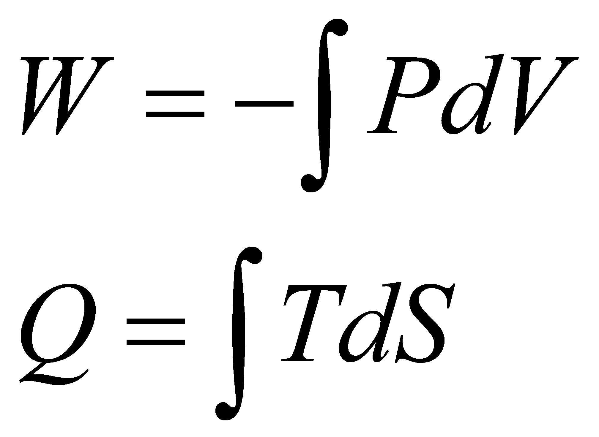
for reversible adiabatic process
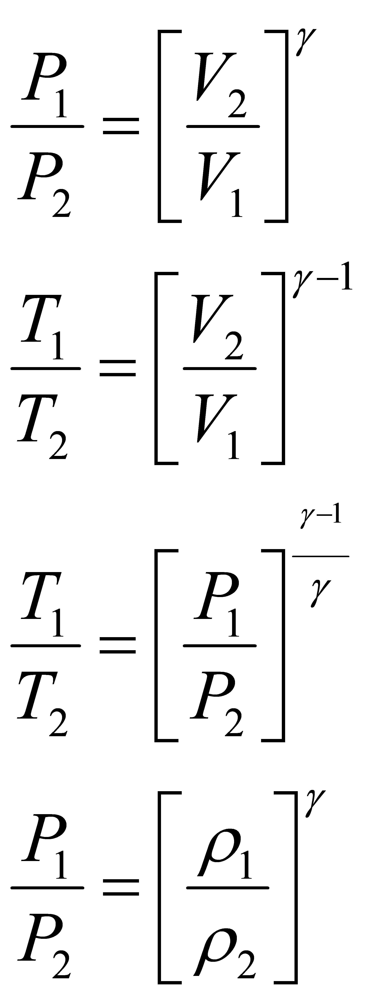
Steady Flow Energy Equation
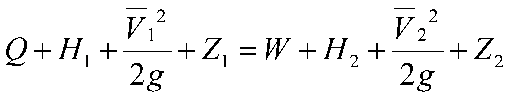
Bernoulli Equation:
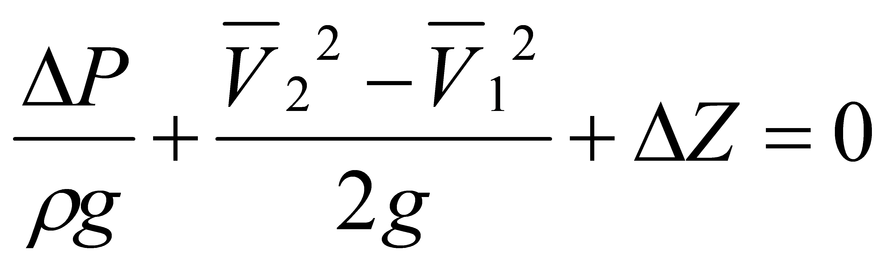
Flow per Unit Area:
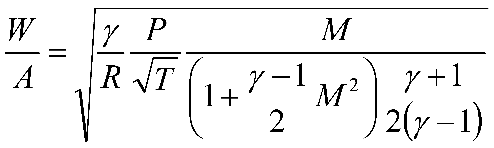
Velocity of sound in a perfect gas:
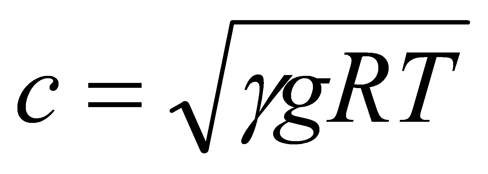
Development of Specific Heat Relations
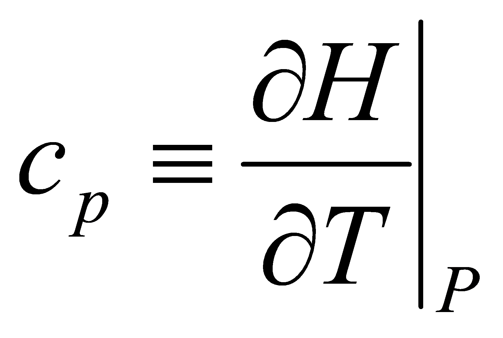
specific heat at constant pressure
(for air = 1004.76 J/\[kg ^o^K\])
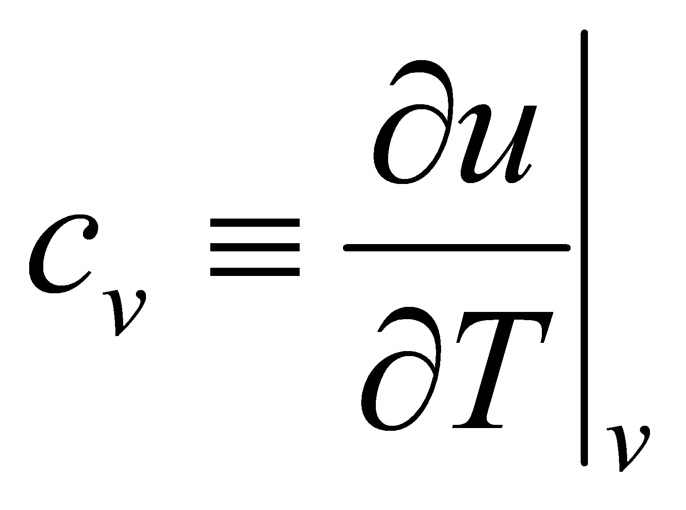 specific heat at constant volume
(for air = 717.986 J/\[kg ^o^K\])
κ =
= ratio of specific heats
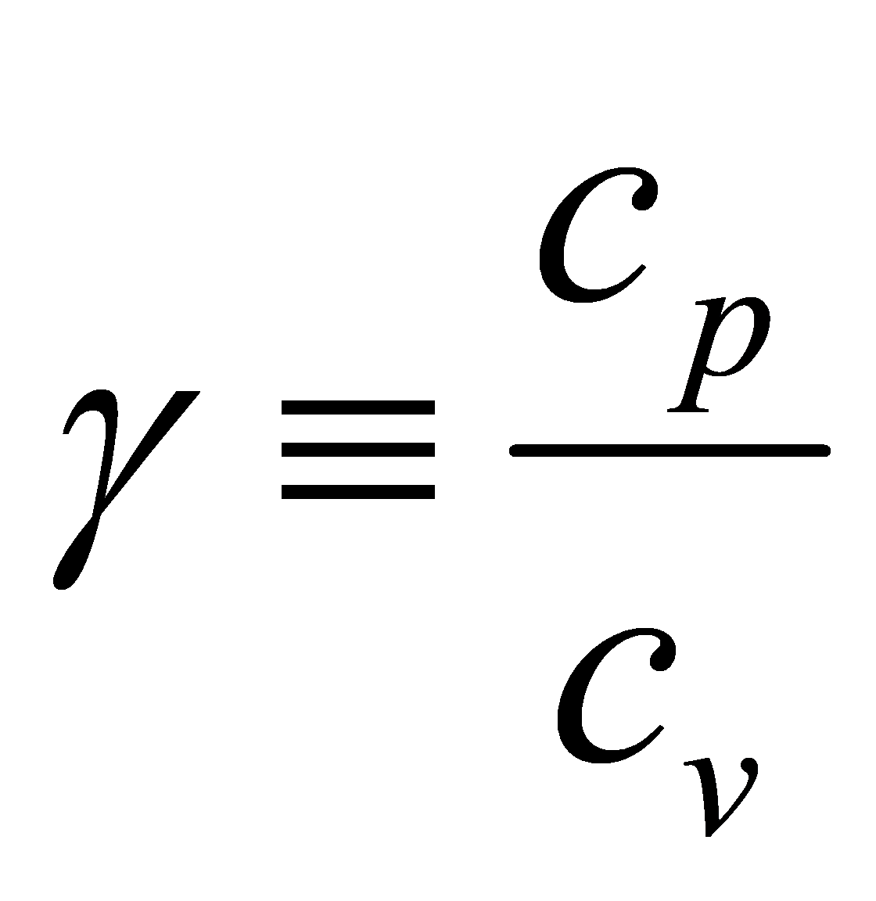
Enthalpy equation in differential form is: dH = du +d(PV)
Substituting definitions and ideal gas law gives
cp dT = cv dT + Rdt or cp = cv + R
Rearranging gives
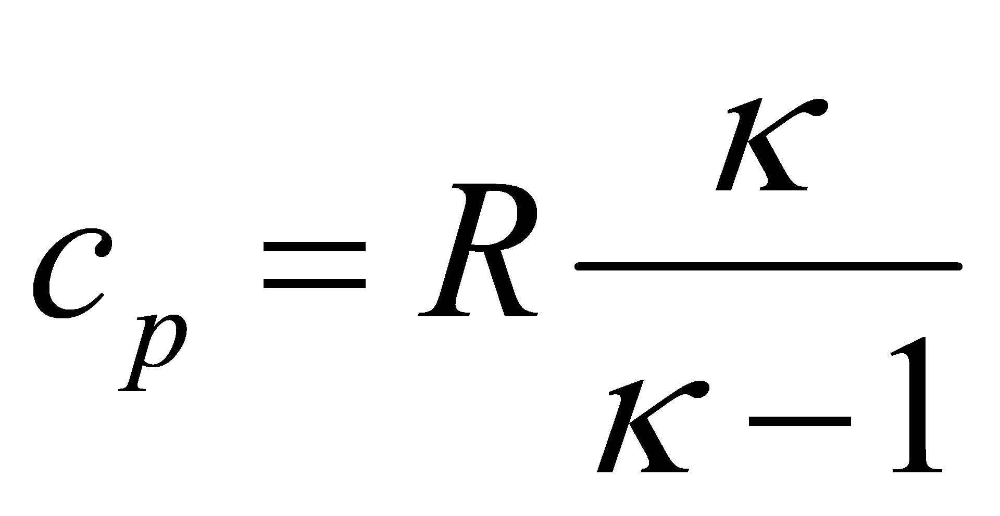and
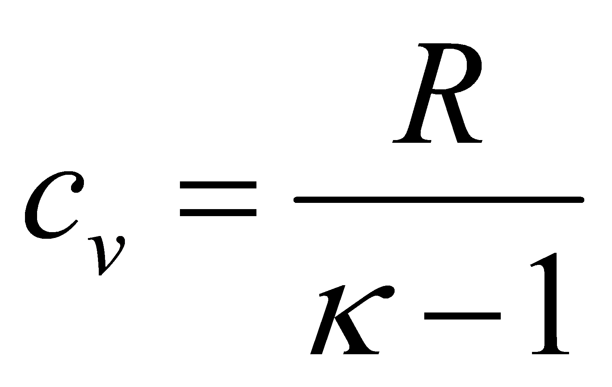
Development of Poisson’s Equation:
1) From the 1st law: W+Q = E2-E1
2) Substitution for each term gives T dS – P dV = du
3) Divide through by T: dS = du/T + P dV/T
4) Recall du = cv dT and PV = RT
5) Substitution gives dS = cv dT/T + R dV/V
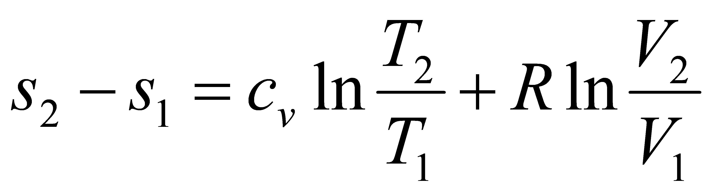6) Assume constant specific heat and integrate:
7) Assuming a reversible adiabatic process
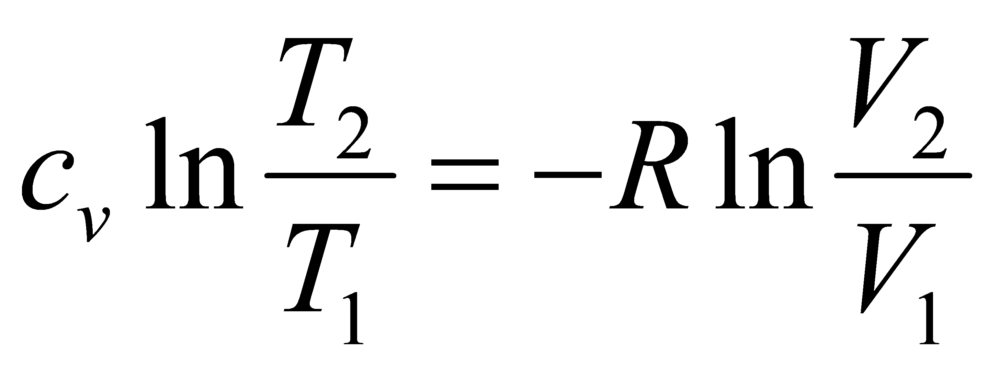
8) Substitute
to get:
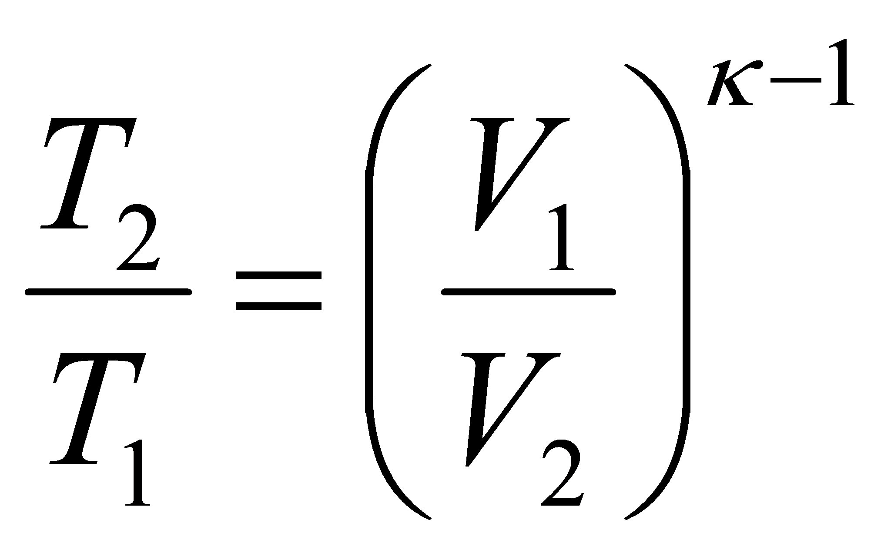
9) Differentiate H: dH = du + P dV + V dP
10) Substitution into step #2: T dS = dH-V dP
11) Integrate:
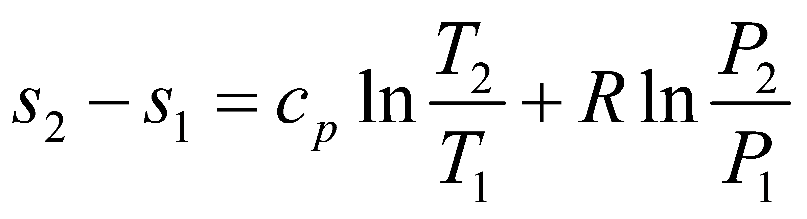
12) Assuming a reversible adiabatic process:
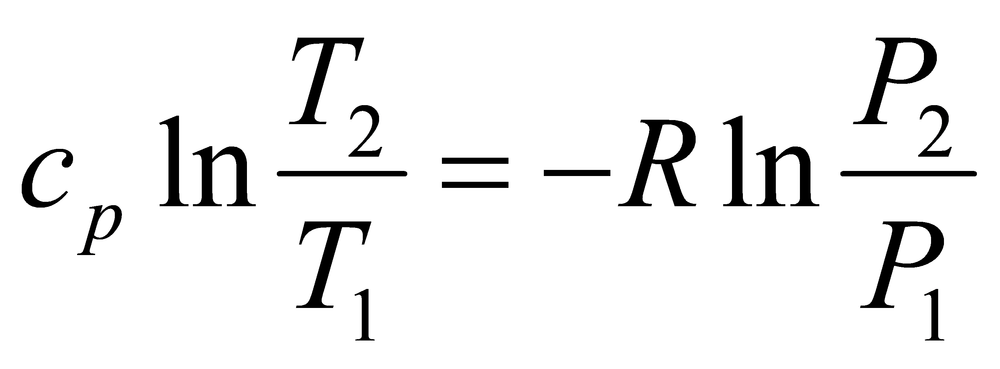
13) Substitute
to get:
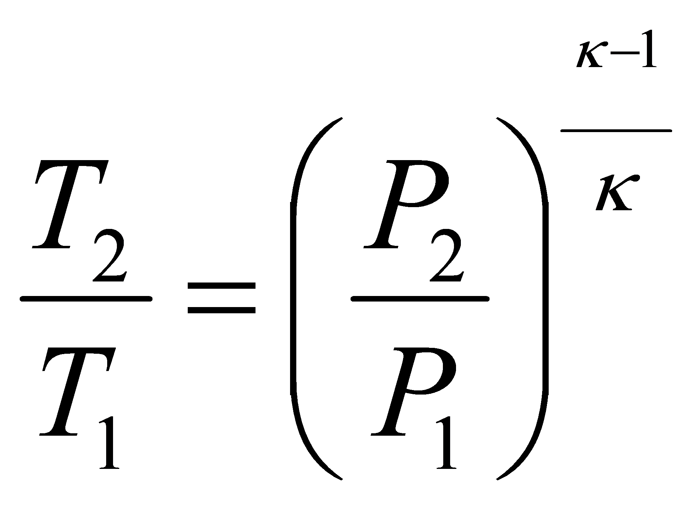
14) Combine steps #8, #13 to get:
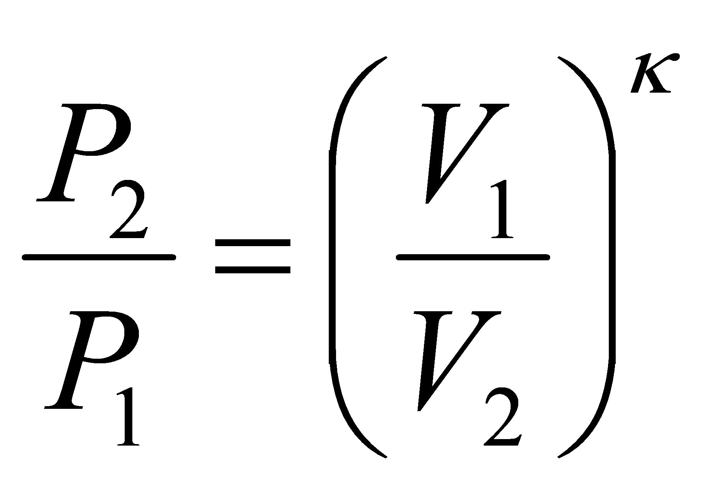
or PVκ = const.
1.8 Mechanics Relations
Abbreviations
a = linear acceleration = dV/dt
ar = centripetal (radial) acceleration
aT = tangential acceleration
F = force
g = acceleration due to gravity (32.174 ft/s2 = 9.80 meters/s2)
G = moment
H = angular momentum = Iw
H = height
Hp = horsepower (Hp = 550ft-lbs/sec)
I = rotational moment of inertia (see section 10)
J = impulse = change in momentum
k = radius of gyration
m = mass
Nr = radial load factor = ar/g
P = power = dW/dt
L = linear momentum = mV
Q = moment (a.k.a. torque)
r = radius
S = distance, displacement
s = seconds
t = time
V = true inertial velocity
Vo = initial inertial velocity
W = work = FS = ½ m \[V^2^ - V~o~^2^\]
q = angular displacement
Vol = volume
ω = angular velocity (radians/second)
ώ = angular acceleration
Newtons Laws
1st law (law of inertia):
"Every body persists in its state of rest or uniform motion in a straight line unless it is compelled to change that state by forces impressed on it.
2nd Law:
" The change in motion is proportional to the motive force impressed and is made in the direction of the straight line in which that force is impressed" (motion defined as velocity x quantity of matter or linear momentum, mV).
dF = dmV/dt = (dm/dt) + (dV/dt)
For constant mass in rectilinear motion: F = ma
For constant mass distribution in curvilinear motion: \(G = \dot{\omega}\text{\ I}\)
3rd Law:
“Every action has an equal and opposite reaction; or, the mutual attraction of two bodies upon each other are always equal and directed to contrary parts.\[opposite directions\]”
Planar Kinetics, Work, Power and Energy
Rectilinear motion Curvilinear motion
displacement S angular displacement θ
velocity V = dS/dt angular velocity ω = dθ/dt
acceleration a = dV/dt angular acceleration \(\dot{\omega}\)= d ω /dt
inertia m rotational inertia \(I = \int_{}^{}{r^{2}\text{dm}}\)
momentum L = mV angular momentum H = I ω
€
force F = ma torque Q = I
work W = \(\int_{}^{}\text{F\ dS}\) work W = \(\int_{}^{}Qd\theta\)
power P = FV power P = Q ω
kinetic energy ½ mV2 kinetic energy ½ I ω2
potential energy mgH n/a
Planar Kinematics at Constant Acceleration
Rectilinear motion Curvilinear motion
V = Vo + at ω = ωo + t
V2 = Vo2 + 2aS ω 2 = ω o2+2 \(\dot{\omega}\)θ
S = Vot + ½ at2 θ = ω ot + ½ \(\dot{\omega}\) t2
S = ½(V + Vo)t θ = ½( ω + ω o)t
\(S = \frac{\left( V^{2} - V_{0}^{2} \right)}{2a}\) \(\theta = \frac{\left( \omega^{2} - \omega_{0}^{2} \right)}{2\dot{\omega}}\)
\(t = \frac{- V_{0} + \sqrt{V_{0}^{2} + 2\text{aS}}}{a}\) \(t = \frac{- \omega_{0} + \sqrt{\omega_{0}^{2} - 2\dot{\omega}\theta}}{\dot{\omega}}\)
\(a = \frac{2\left( S - V_{0}t \right)}{t^{2}}\) \(\dot{\omega} = \frac{2(\theta - \omega_{0}t)}{t^{2}}\)
Curvilinear motion with constant acceleration and radius:
r = V2/gNr
V = ωr
NR = ar/g
ω = gNr/V
\[\dot{\omega} = \frac{\dot{V}}{R}\]
ar = rω2 = V2/r
\[a_{r} = \dot{\omega}r\]
Aircraft in level turn:
Nzw = load factor normal to flight path
r = turn radius
Ω = turn rate (rad/sec)
\[r = \frac{V^{2}}{g\sqrt{N_{\text{zw}}^{2} - 1}}\]
\(\omega = \frac{g\sqrt{N_{\text{zw}}^{2} - 1}}{V}\)
\[N_{\text{zw}} = \sqrt{\frac{\omega V}{g} + 1}\]
V= inertial velocity

Gyroscopic Motion
(reference 1.7)
for bodies spinning about an axisymmetric axis
\(\dot{\mathbf{\Psi}}\)= spin rate
\(\dot{\phi}\)= precession rate
\(\dot{\theta}\) = nutation rate
Iz = moment of inertia about spin axis
It = transverse moment of inertia about the spin point
(perpendicular to spin axis)
Icg = moment of inertia about the cg (perpendicular to spin axis)
Mx = moment about spin point (acting along plane that defines θ)
. .
For steady precession (constant θ, φ , ψ )
\(\sum_{}^{}M_{x} = - I_{t}\dot{\phi^{2}}\sin\theta\cos\theta + I_{z}\dot{\theta}\sin\theta\left( \dot{\phi}\cos\theta + \dot{\Psi} \right)\)
For torque free motion (gravity is only external force)
\(\dot{\Psi} = \frac{I_{\text{cg}} - I_{z}}{I_{z}}\dot{\phi}\cos\)
note that Icg>Iz yields regular precession
while Icg<Iz yields retrograde precession
Section 1.9 International Phonetic Alphabet and Morse Code
| A | Alpha | • ▬ |
|---|---|---|
| B | Bravo | ▬●●● |
| C | Charlie | ▬ • ▬ • |
| D | Delta | ▬ • • |
| E | Echo | ● |
| F | Foxtrot | • • ▬ • |
| G | Golf | ▬ ▬ • |
| H | Hotel | • • • • |
| I | India | • • |
| J | Juliet | • ▬ ▬ ▬ |
| K | Kilo | ▬ • ▬ |
| L | Lima | • ▬ • • |
| M | Mike | ▬ ▬ |
| N | November | ▬ • |
| O | Oscar | ▬ ▬ ▬ |
| P | Papa | • ▬ ▬ • |
| Q | Quebec | ▬ ▬ • ▬ |
| R | Romeo | • ▬ • |
| S | Sierra | • • • |
| T | Tango | ▬ |
| U | Uniform | • • ▬ |
| V | Victor | • • • ▬ |
| W | Whiskey | • ▬ ▬ |
| X | X-ray | ▬ • • ▬ |
| Y | Yankee | ▬ • ▬ ▬ |
| Z | Zulu | ▬ ▬ • • |
| 1 | One | • ▬ ▬ ▬ |
| 2 | Two | • • ▬ ▬ ▬ |
| 3 | Three | • • • ▬ ▬ |
| 4 | Four | • • • • ▬ |
| 5 | Five | • • • • • |
| 6 | Six | ▬ • • • • |
| 7 | Seven | ▬ ▬ • • • |
| 8 | Eight | ▬ ▬ ▬ • • |
| 9 | Niner | ▬ ▬ ▬ ▬ • |
| 0 | Zero | ▬ ▬ ▬ ▬ ▬ |
Section 1 References
http://www.onlineconversion.com/
1.1 Anon., “Weight Engineers Handbook”, Society of Weight Engineers, P.O.Box 60024 Los Angeles, CA 90060,1976.
1.2 Anon., “Aeronautical Vestpocket Handbook”, United Technologies Pratt & Whitney Canada, 1000 Marie Victorin Blvd. E. P.O.B. 10 Longueuil, Quebec Canada J4K 4X9.
1.3 Jones, J. P., Hawkins, G.A., “Engineering Thermodynamics” John Wiley & Sons, 1960.
1.4 Esbach, Ovid W., “Handbook of Engineering Fundamentals”, John Wiley and Sons Inc., 1963.
1.5 Potter, M.C., Somerton, C.W., “Engineering Thermodynamics” Shaum’s Outline Series, McGraw-Hill, Inc.,1993.
1.6 Abbott, M. M., Van Ness, H. C., “Thermodynamics”, Shaum’s Outline Series, McGraw-Hill, Inc., 1989.
1.7 Halliday, D., Resnick, R., “Fundamentals of Physics”, John Wiley & Sons, New York, 1981.
1.8 Roberts, S.C., Chapter 3 Aircraft Control Sytems , “Aircraft Flying Qualities Testing”, National Test Pilot School, 1997. P.O.B. 658, Mojave, CA, 93501.
1.9 Unit Conversion Website Link http://www.digitaldutch.com/atmoscalc/.